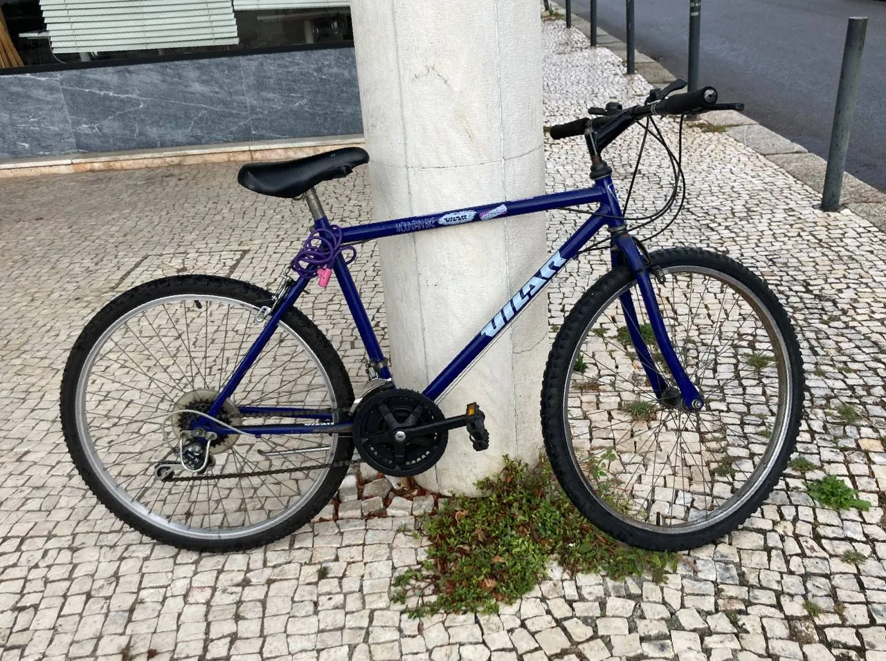

Can't really start this blog with something profound, so here are two necessary resources for anyone who lives in Portugal with a Portuguese salary, or a fellow lover of all things authentic.
Spelled /o-el-shish/ here, a company that's also big in Ukraine. The biggest marketplace of all things used. If you don't have an account there, get it.

Vilar bicycle in question
Vilar bicycle in questionJust today I finally bought this authentic beauty for 25 eur from mah man Pedro in Foz. He was clearing out his relatives' old apartment and selling a couple of Vilar bikes from the nineties on OLX.
Interesting fact: Vilar used to be the first and biggest manufacturer of bicycles and scooters in Portugal with a factory in Porto, on Rua do Bonjardim. It was shut down in 1980.
This is where I buy my clothes. I hate shopping, and Vinted has another huge advantage: it delivers to delivery points, like tabacarias, where you can pick stuff up at your leisure.
It's magical, cheap, and works across most of the EU.
Try and look for silk shirts here, they changed my life.